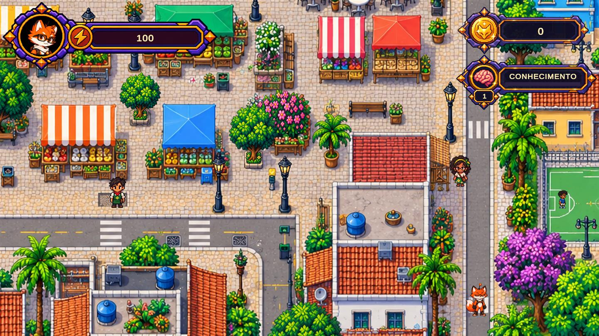

CAPTURA REAL DO PROTÓTIPOPROJETO EM DESTAQUE · TCC EM EQUIPE
Nexa Quest Game
Educação encontra exploração em uma aventura pelo Brasil. Um protótipo que conecta quizzes, minijogos e progressão em uma experiência jogável no navegador.
- Progressão, recursos e persistência local
- Interfaces e integração de minijogos
- Publicação de um protótipo WebGL